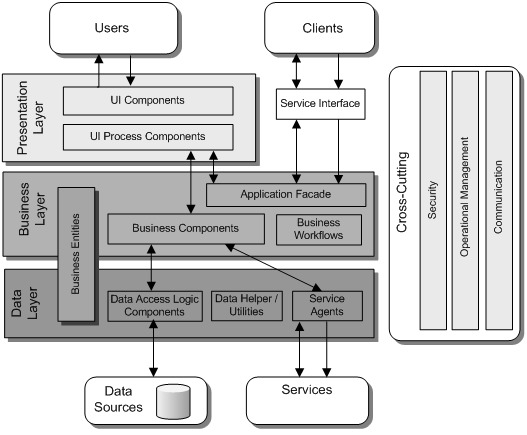
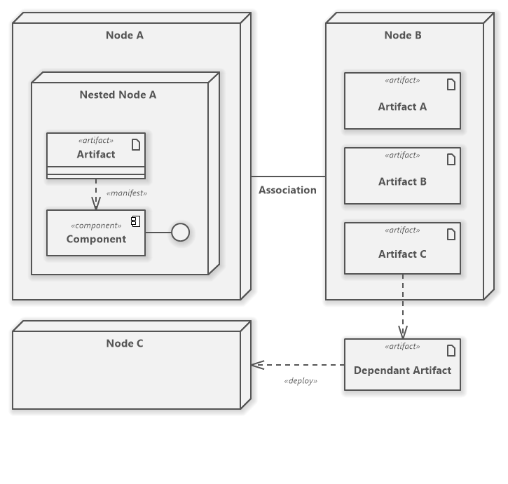
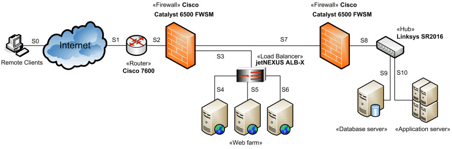

Software architecture#
What is software architecture?#
Software architecture refers to the fundamental structures of a software system and the discipline of creating such structures and systems. Each structure comprises software elements, relations and properties of both elements and relations.
Software architecture is usually represented with a model.
Architecture model#
Architecture modeling have the following characteristics:
- It represents a set of structures necessary to reason about a system.
- It is an abstraction that dispenses with details.
Architectural points of view#
Architecture can be defined from physical or logical point of view.
Physical architecture#
Physical elements for software execution:
- Hardware
- Third party software
- Other elements external to the application
Logical architecture#
Software components. Group the different functionalities.
- It deals with the public part of the elements of the system.
- Describes the software components, the relationships between them and their properties
- Ignores the internal implementation of the components
Mixed architecture#
It is also usual to represents both together: physical as tiers, logical as layers.

Architecture layers#
Each architecture layer, has a specific purpose.
Presentation layer#
- Displays the user interface
- Facilitates user interaction with the system
- Server-side contains a component that generates and serves the HTML.
- Client-side contains a browser that displays HTML and executes scripts.
- Computational load:
- Traditionally the presentation logic was server-side.
- Technologies such as AJAX allow logic to be executed on the client-side.
Business layer#
- Includes business logic
- Allows reuse of business logic functions
- Enables improved maintenance and testing
Data layer#
Abstracts the logic needed to access the DB.
Service layer#
- Encapsulates access to external services residing on a remote machine
- The system itself can be offered as web services.
Architecture scalability#
Scalability is how increased data usage and growth affects performance.
It is important:
- The correct dimensioning of the application
- The adaptability of the system to increased demand.
There are two ways of scaling a system: vertical or horizontal scaling.
Vertical scaling#
Adding more power to the machine hosting the system
- Faster CPU
- More RAM
- SSD disks
Horizontal scaling#
Creating system clones and load balancing. Balancing can be done by hardware or software.
Hardware balancing#
Different requests from the same user can be handled by different clones.
Based on routing, tunneling or IP translation.
Software balancing#
All requests from a user are served by the same clone.
Done by inspecting HTTP packets to maintain the user session in the same machine.
Architecture patterns#
They describe a general solution to a design problem that is frequently encountered.
- Are general organization schemes of a system
- Specify a series of subsystems or components and their responsibilities
- Define rules for organizing the interactions between them
More about architecture patterns here.
Architectural modeling in UML#
Components diagram#
A component diagram is composed of software components.
A software component is a composition unit with all its interfaces and context dependencies explicitly defined.
Components properties#
- Ports: Connection points between your internal structure and your environment.
- Interfaces: Services offered and required to compose it with others.
- Realizations: The classes that implement it.
- Artifacts: The physical files that enable its deployment.
- Source files
- Scripts
- Executables
Deployment diagram#
Shows the communication topology of a distributed system.
- They represent the nodes or devices of the system
- The connections between the nodes
- The assignment of artifacts and software components to each node
It is the highest level diagram in UML.

The use of visual stereotypes allows a particularized representation of the deployment diagram.
